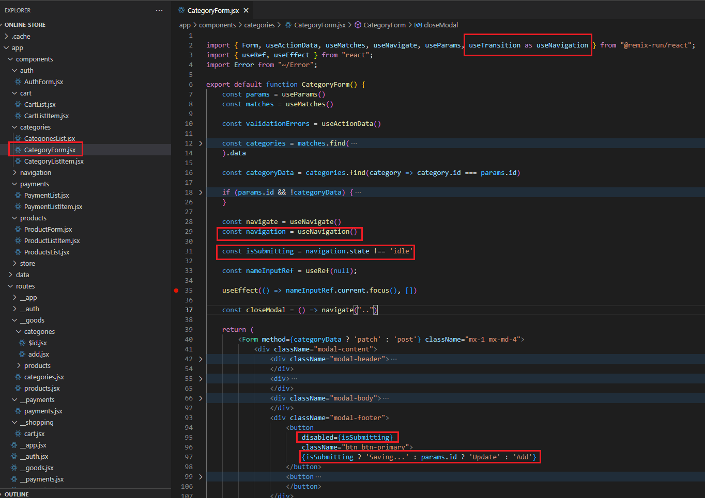
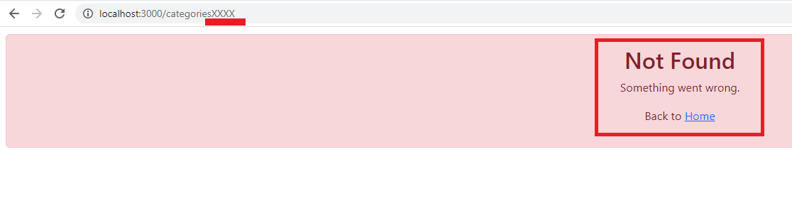
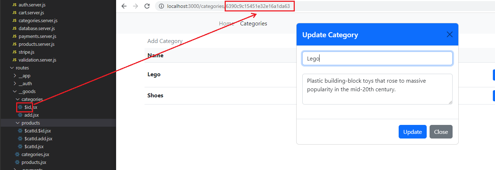
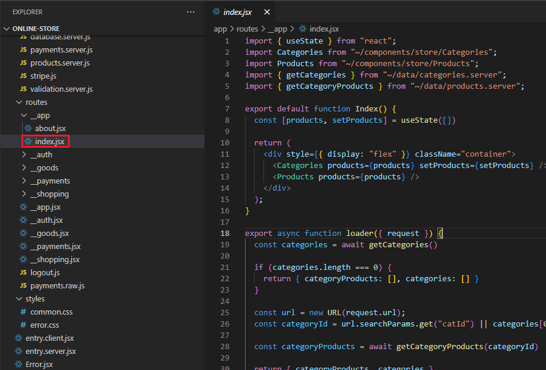
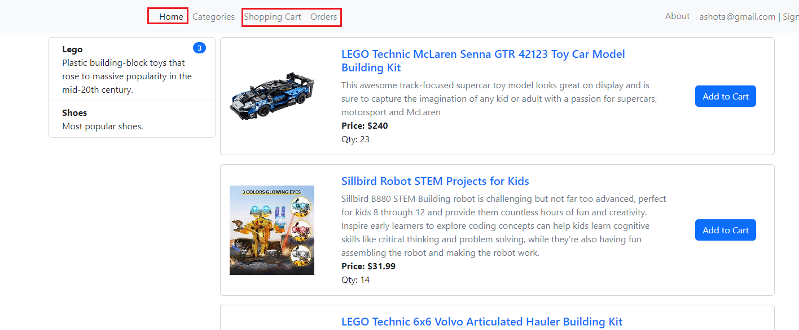
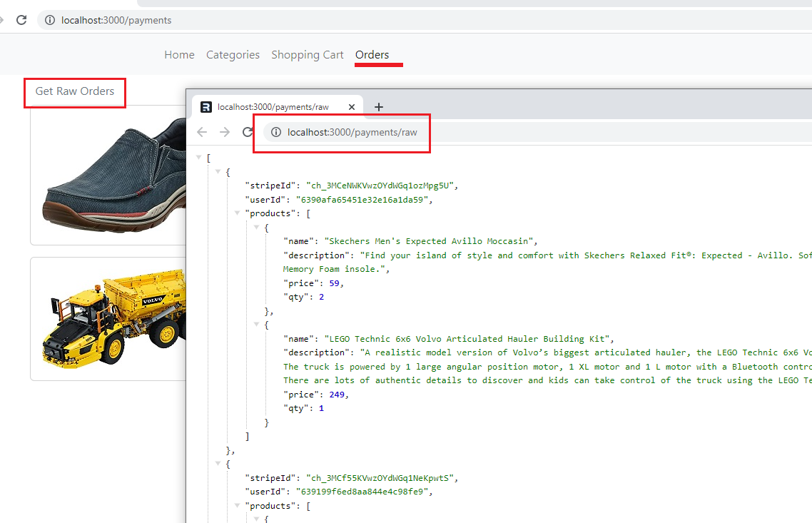
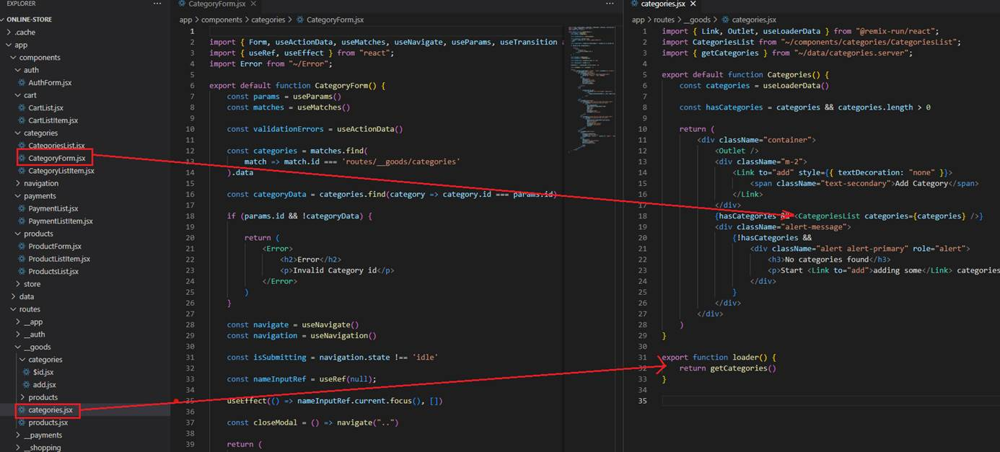
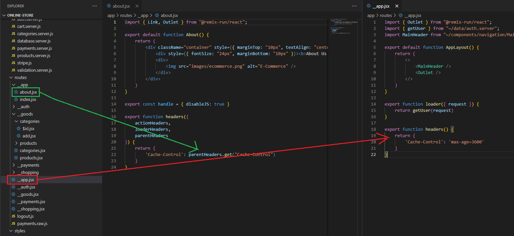
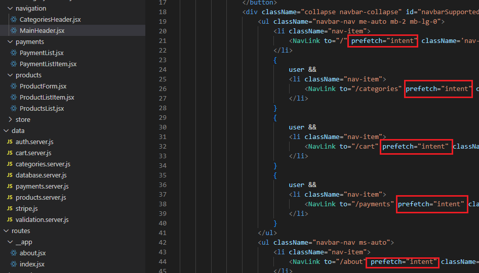

Remix
Online Store
Video: https://youtu.be/K56f1Z1Ha7c
GitHub Repo: https://github.com/Ashot72/Remix-Online-Store
Remix
https://remix.run/ is a full stack web framework that lets you
focus on the user interface and work through web standards to deliver a fast,
slick and
resilient
user experience. Remix is used for server-side rendering (SSR). This meant that
both the backend and the frontend can be made using a single Remix
app.
Data is rendered on the server and served to the client side with minimum
JavaScript. Unlike vanilla React, where data is fetched on the frontend and
then
rendered
on the screen, Remix fetches data on the backend and serves the HTML directly
to the user.
Figure
1
In
routes folder we basically define the different routes, so the different
pages, that we want to support as part of our overall web application.

Figure
2
root.jsx
defines basically the main skeleton
that will be wrapped around all our web components. To be precise, your page
components will be included in the outlet place in root.jsx.

Figure
3
In
the root.jsx file we can export a special function which is called links.
That is a reserved name. Remix will be looking for an exported function
called
links. It looks for such a function in all your route files and the root
file, the root.jsx counts as a route file. This is our route that wraps
all
other routes. We need this links function to add some extra links that
should be added in the head section of your HTML document.
Figure
4
You
may notice that the skeleton defines components such as Meta, Links,
Scripts etc. For example, Scripts is used for injecting the
client side scripts when the
page
is downloaded on the client side. Meta and Links defined in head
section are used by Remix to inject any metadata or any links that apply to
pages.
That
is how we can point at a style sheet in a regular HTML document. We add our
links with that links function. This function should return an
array
(Figure 3) and in that array you have various objects where every object
defines one link that will be injected in the <Links /> place by Remix
when
it renders your page.
Figure
5
You
can see that we added links to payments which means that the style will
be loaded for payments only. Remix will create a link tag
and
will inject in the header section when payments (orders) page is loaded.
We have this page specific approach here so that users do not unnecessary
download CSS files.
Figure
6
Here,
I am on the root page and download CSS files specified in root.jsx.
Figure
7
Now,
I am on the payments (orders) page and downloading CSS defined both in
root.jsx and in the payments.jsx file.

Figure
8
When
we are using form element with React, we often add a submit handler
onSubmit such as <form onSubmit={submittedHandler}>. Then we get an event
in submittedHandler
function
and typically call event.preventDefault. In Remix we are not going to
add a submit hander. We are not going to prevent default and with Remix we are
going to embrace the default.
You
see that when we are going to add a category, we specify method='post'. If you have
worked with HTML form elements before you might know that you can also add the action
attribute
<form
action=''> which enables you to add a path to which
this POST request should be sent when this form is submitted. We can
define the path the post request should be sent to.
Remix
provides a custom Form component that works identically to the native
HTML <form> element. It behaves like a normal form except that the
interaction with the server is with
fetch
instead of new document requests,
allowing components to add a better user experience to the page as the
form is submitted and returns with data.
Figure
9
Actually,
we do not have to specify action attribute because CategoryForm.jsx
component is already used in by add.jsx page component. We have to add
some code to
add.jsx
route to handle that request.

Figure
10
We
have to add a new function to add.jsx file and we have to export
it. This function must be called action. This is the name Remix will be
looking for just as it was
looking
for links. There are couple of special function which you can export in
your Route files. Whatever we put into this action function it will run
on the backend,
on
the server not in the browser.
The codes defined in this action function will also not be downloaded to
the client. Remix will split the code and only execute
and
store that code in the action function on the server. When exactly is
this action function triggered? It is triggered whenever a non GET request reaches
this Route.
In
our action function we are handling the submission of a new category.
Figure
11
We
submitted a new category but we also want to retrieve categories whenever categories.jsx
page component is loaded, whenever a GET request is reaches this route.
That
is achieved by exporting another function here, the loader function. loader
like action is reserved name, and Remix will be looking for such a
function, hence
we
also exported it. The component will be pre-rendered on the server. On the
server it will be rendered and the finished HTML code is sent to the client along
with
some
JavaScript code so we still have an interactive website for the end user but it
is pre-rendered on the server. In this loader we should write some more
backend code,
because
just like the code in action, code in the loader will be executes on
the backend only, it will never rich the front end, the client side.
Figure
12
In
our component we can access to these categories, to the data returned by the loader
by using a special hook provided by Remix the useLoaderData hook. This
hook simply
gives
us access to the data returned by the loader. The data returned from the
loader is serialized, which is temporarily converted to a JSON string.
You cannot return any
rich
objects here, you just get some plain data. Remix seamlessly blends front end
back end together. Note, that Remix ensures that the data are loaded completely
before
it serves the finished page. So, we do not need any loader.

Figure
13
What
can we do in order not to submit the form twice by clicking the submission
button twice? We can achieve it by also using another hook. That is useTransition
hook which will be
renamed
to useNavigation one in a future version. This hook gives us a
navigation object. This navigation object contains some useful data about
ongoing requests that might be happening
behind
the scenes. We can access the state property to find out whether we are
currently submitting data, or maybe loading data. If the state is not idle then
we are submitting.
If
submitting then we will disable the button not to submit twice and change the
label to Saving

Figure
14
Here,
I am Updating Category by submitting it.

Figure
15
You
see I appended XXXX to dateAdded field to trigger an error as there is
no dateAddedXXXX field in the database.
Figure16
We
get this ugly error page because this default error page is being shown.
Instead, we want to show our own error page. We can easily do it with Remix.

Figure
17
For
example, we can go to the root component and in there we can export another new
function. That function is called ErrorBoundary.
It
is actually a component which we are exporting here therefore it starts with an
uppercase E. This is a component Remix will display if
an
error occurs anywhere in your application since we are doing this in the root
component. Here we return our Error component which is the
Bootstrap
alert component.
Figure
18
If
we save this and reload, we will get our own error page. We are not limited to
just adding this to the root component. Instead, we can add this special
Boundary component in any Route file. If we only, have
it in the root component, this will simply handle all errors that occur
anywhere.
Error
Boundary only deals with normal errors, but
there is another kind of error that could occur in case of a full stack
application.

Figure
19
Let's navigate to a
route that does not exist. Whenever you throw a response Remix recognizes it
and renders a different component than the
Error
Boundary. Whenever you throw anything but a
response the Error Boundary will be used.

Figure
20
A
component which we also should export here in our Routes is called Catch
Boundary. It catches any error responses. And just like Error Boundary
you
can add it on a per Route level or add it on the root level, or do both. The
root level Catch Boundary will catch all unhandled error responses that
were
generated anywhere else in the application, and the Route specific Catch
Boundary will handle any error responses related to the Route.

Figure
21
Now,
if we visit the page again, we will this page because of the Catch Boundary we
added.

Figure
22
In
Remix we add adynamic route by adding a fie name that starts with a $ dollar
sign. The dollar sign in front of id or catId signals to Remix
that this is a dynamic route and
a
dynamic route simply means that the actual value in the path will not be dollar
sign id, but instead that only acts as a placeholder for the actual
value that will later be
encoded
in the URL.
Figure
23
Here,
I edit a category and see the category Id in the URL. This category id is
interpreted by Remix as a value for this $id placeholder.

Figure
24
We
can also use dot notation for nested paths in the Routes. payments.raw will
be accessed as /payments/raw to get raw payments (orders) data.

Figure
25
If
we go to Orders page and click on Get Raw Orders link, we will
get raw orders data in a new browser's tab.
There
also is an alternative to using the dot delimited notation.

Figure
26
The
alternative is creating a folder such as categories in the routes
folder. Remix will treat folder names under routes also as path segment names.
Remix
will automatically construct a path /category which is the folder name
and then the file names such as /categories/add.jsx. When we use
the
folder name categories in our case for grouping nested paths
together, then Remix automatically treats the file categories.jsx which
carries the same
name
as the folder just with a file extension since it is a file. It treats categories.jsx
file as so-called layout component for those nested routes.
Figure
27
This
is the component page matching /categories/add route.
Figure
28
If
we do not have a layout component like categories.jsx and have index.jsx in a
nested folder instead (not the case in here as it is not a nested folder) then index.jsx
will be called.
index.jsx
is a special file name in the Remix
world. It basically denotes the main page that should be loaded for a given
path.

Figure
29
Main
index.jsx file matching the root route.

Figure
30
Remix
introduces pathless layout routes. Pathless layout route is a layout
route that we can add to add an extra layer level of nesting without, that is
the important part,
without
adding a new path to the URL. We added a folder __goods and the two
leading underscores are important because this signals to Remix that this is a
pathless
layout route. Just creating that folder is not enough though. We also have to
create a file called __goods.jsx. Here again the two leading underscores are
important.
The part after the underscores, is up to us for both the folder and the file
but it should then be the same. The folder name should match the file name.
The
special thing is that this now allows us to add a layout component that does
not introduce a new a new path in the URL because wd do not want to have
/app/categories/add for example. Instead, it should still be /categories/add
but we want to have an extra wrapper component and that is precisely what this
pathless
layout component here will do for us. The styles specified in links() function
will be available for all the routes in the __goods folder. With this pathless
layout
component we can display different navigation bars for different sets of
routes.

Figure
31
For
example, Home, Shopping Cart or Orders page you will have
the same navigation.

Figure
32
When
you are on Categories page then you see a different navigation, Shopping
Cart and Orders links are missing. Since we added those pathless
layout routes it is super easy to load these
different
navigation bars. Instead of using one and the same navigation bar and header
for all pages by including it in the root component we can added it in __goods
layout component
which
is <CategoriesHeader /> (Figure 30).

Figure
33
In
__payments.jsx file and in the other pathless layout routes we include
the full header bar <MainHeader />

Figure
34
We
have another important tool provided by Remix with which we can work. I tis
called Resource Routes. Till now we have seen that all these routes load
pages. When we click on a link, we see a page.
This
is the most common use case. Sometimes we want to have certain links to load
data instead.

Figure
35
Doing
that is pretty straightforward. We just export loader() function. As we
saw this function load the data for the page and the page can then use that
data with help of
useLoaderData. In most cases we use loaders in conjunction
with components for which they load data but we can use loaders standalone to
just return some data. So, in the
code
we have a loader that returns some data and does not have a connected component.
If you click on 'Get Raw Orders' in Orders page (Figure 36) you will see your
orders
data
in a new browser's tab.

Figure
36
For
our Remix online store, we use MongoDB Atlas. It is a database hosted in the
cloud and we can get I started for free.

Figure
37
In
Network Access page we added 0.0.0.0 IP address to access from everywhere. In
order talk to database, we will use third party library which will significantly
simplify
the database interaction. This library is called Prisma https://www.prisma.io/. Prisma is a library that simply makes it
very to write code, which under the hood
will
be translated to database queries. After installing Prisma we run npx prisma
init datasource-provider mongodb command to work with MongoDB.
Figure
38
What
this did is it created a new prisma folder and in there a schema.prisma
file. In that file we basically set up some things that will allow us to work
with mongoDB.

Figure
39
It
also creates .env file which contains a connection URL that is
used to connect to database.

Figure
40
The
first thing that we should do is connecting our application to database.
Figure
41
Here
we copy this URL, set the password and replace it with the default path of
DATABASE_URL in the .env file.

Figure
42
With
prisma installed, it is time to tell prisma how our data should
look like.

Figure
43
In
data folder you see database.server.js file to connect to
database via prisma, categories.server.js to interact with online store database
categories; getting them, adding a new one etc.
What
is also interesting here is the name of the files ending .server.js. This
is a specific feature supported by Remix. You can include .server in your file
name right before the file extension
to
tell Remix that the code in this file should only be executed on the server.

Figure
44
In
our code we should also add server-side validation. This can be done by going
to the action and there before we actually store data in the database, we want
to validate the data
submitted
by the user.

Figure
45
We
specify all validations in validation.server.js file.

Figure
46
Validation
errors when adding a product.

Figure
47
In
order to display category page, we have to get categories' data.

Figure
48
Once
we get it, we may want to update a category data. After clicking the edit
button there is no sense to make another request to get the category data as we
already loaded all categories and
we
can filter it out from there.
Figure
49
We
fetched categories in categories.jsx route file so we can use the data
we already have. So how can we use data of another, parent route in a child
route?
Figure
50
I
just added useLoaderData() hook in CategoryForm.jsx file opened Update
Category dialog and refreshed the page. You see that no data is available.

Figure
51
We can get data from a different route provided by Remix useMatches() hook.
useMatches() hook is simply a hook that gives you matches object which
is an array with objects
describing
all the route matches Remix identified for the route that is currently active.
We printed the log of the matches array. It is an array of matches where every
match
is an object describing one route that matches the currently loaded route. So,
all these routes are currently active. We can use an id to get access to
the data
of
a loader of another route. We can see that data are in routes/__goods/categories
actually (Figure 49). data property contains the data fetched by the
loader of this route.

Figure 52
Here we fetched all categories mathing the route.

Figure 53
Then we filter out the data from categories data matching the
dynamic route id ($id).
Figure 54
I want to show another scenario where you may use useMatches
hook. We have __shopping.jsx layout component and cart.tsx component
as a child and both of them define loader function.

Figure 55
I console log cart and __shopping inside the
respective loader functions and refresh the cart page. After it I
see both __shopping and cart loaders are executed. These loaders execute in
parallel not
after each other to serve a page as quickly as possible. When
we are on carts page and executing cart.jsx Remix will always return the closet
loader data in loaders hierachy when using useLoaderData hook.

Figure 56
Here, useLoaderData will get its loader
function info as it is the closet one and render user's
cart infromation on the page.
Figure 57
StripeCheckout component needs logged on user email as a proeprty. As we
cannot get user info via useLaoderdata hook as it is not the closest
loader then we can get the user info via useMatches
hook by accessing 'routes/__shopping'
route and retrieve logged on user's data.
Figure 58
We saw how we can submit data via Remix custom Form component that works
identically to the native HTML <form> element (Figure8). But if we want
to have an action
on
the back end that does not return a redirect but some raw data we have to send
the request differently. That can be done with useFetcher hook which is
another hook
provided
by Remix. This gives us a fetcher object which contains various pieces of data
and also a submit method as well as a load method.
Fetcher
essentially is an object which we can use to build user interface where we want
to load or submit requests behind the scenes without triggering subsequent
navigation
actions. You see we also add an extra confirmation step using confirm
function offered by the browser Are you sure you want to delete this
category?

Figure
59
With
this additional code it makes a lot of sense to use useFetcher to
programmatically submit the form.
User
Authentication
The
goal always is that you have a user and you have your website and that user
sends their credentials, email and password for example
and
you then want to validate those credentials in your back-end code and grant the
user access to protected resources if these credentials are valid.
One
common approach for that is to validate credentials and then create and sign a
cookie on the backend. In your backend code sign it with a secret
only
you know so which is not known by the user. Then that session cookie that was
generated can be sent to the user, it then stored on their machine
by
the browser in a secure way and it can then be attached to outgoing requests to
protected resources. Then you can check whether a valid cookie is attached
to
those requests, to the protected resources and only if that is the case you
grant access to those resources. That is the idea behind such a session cookie.
You
create a session, you create such a cookie, you send it to the user, the users
browser stores it and then it is attached to requests to protected resources.
In
your back-end code you therefore need code that generates that cookie and signs
it but you also need code that validates the cookie and checks if a valid
cookie
is attached to those requests for protected resources.
Figure
60
Authentication
related code is defined in auth.server.js file to really make sure that
this code never ends up on the front end.
Figure
61
First,
we import createCookieSessionStorgae which will help us to create cookie-based
sessions then we create it for 30 days.
Figure
62
Then
we create session cookies. We expect to get a userId of the authenticated user.
In this function we use sessionStorage to get a session. Behind the
scenes Remix will create a cookie for us.
We
can then add some session data by using the set method on this session.
We want to store the id of the user that is authenticated in that session, so
in that cookie, and I will set that user Id key here.
Now,
we must send that cookie to the user. We must generate a response. We want to
redirect the user to a different page, because the user is on the auth page and
attach that generated session cookie
to
that outgoing redirect response. That cookie reaches the browser of the user
and the browser will then automatically store the cookie. We redirect by getting the path as an
argument.

Figure
63
At
the end of the signin function we call createUserSession and pass
the user id and the redirect path which is the root path.

Figure
64
The
user is signing in.

Figure
65
After
the sign in the session cookie was set and the user was redirected to the root
path.

Figure
66
Here
is the session cookie was set.
We
should make sure that certain pages are not accessible and for that reason we
can use their loaders to block navigation to these pages.
Figure
67
For
example, payments.jsx route. We have a loader where we get our payments
and here it would make sense to first of all to check whether we have a logged
in user.
If
that is not the case, we do not want to continue at all. Instead, we want to
redirect the user away and not grant access to this page and its subpages.

Figure
68
For
that we create requireUserSession function. We call getuUserFromSession
which is one of the functions we created earlier. If a user is not
authenticated, we throw redirect.
This
is something we have not done before. We have thrown normal responses and we
return to redirects, but we can also throw redirects. If we do that, we will
not
trigger
a catch boundary, but instead the user will simply be redirected.
Figure
69
We
may need to check userId existence not in a single place but in many loaders.
This is important to do that and you can just put it on a segment of all your
routes because
the
loaders and actions can be run independently and in parallel. This does needs
to be applied to each one of these loaders and actions. If it becomes
cumbersome, then
you
can use Remix with some sort of middleware tool like Express. You can add a
middleware that double checks the user's authenticates state there. There is nothing
currently
built into Remix for that. So, we are going to be adding this requireUserSession
on any page where we only want the authenticated user.

Figure
70
Metadata
is added with a special function that can be exported I your route files and
indeed the root route is exporting such a meta function already.
Figure
71
You
can see Online Store title on the main page. When you reply on <Meta
/> function then Remix will merge the metadata you define in meta()
function with all
the
other metadata set by any other routes automatically and will inject into the
head section into this <Meta /> element.

Figure
72
In
this dynamic $id route we output some dynamic info; the selected category title.

Figure
73
We
edited first category and the tabs title was replaced with the category name.

Figure
73
We
selected the second category and the category name Shoes was displayed as
a title.
We
can also attach custom response headers inside Remix. Suppose we want to add a
header in our categories and products route.

Figure
75
Remix
provides us with the headers function which we export this inside our
components. headers() should return an object where you specify your
headers
that
should be added to the page response. We added Cache-Control header with
max-age of 3600 (60 minutes). We give the browser the extra information
that
this page can be cached for up to 60 minutes and only thereafter a fresh copy
should be requested.

Figure
76
If
we go to categories page and reload it, you see that there we do have cache
control response. If you make a change to this page, you will see that change after
60 minutes.
Figure
77
If
we do a change to a parent route in our case in __app.js pathless route the
change will not be picked up by a child route automatically which is, say, about.jsx.
You can get
it
from the parent route via parentHeaders and in this case you do not need
to specify max-age 3600 in many places. We just get that value from the parent header
and
max-age
value can be modified in a single place.
Figure
78
There
is a page in our app that can work without JavaScript. We do not need
JavaScript on this About page as we have some static content.
Figure
79
Because
that is the case, we could disable JavaScript for this page. The advantage
would be that if we visit that page, we do not have to download all these JavaScript
files.
These
files are downloaded because after the initial request we are back to single
age application and these files are needed to run that single page application.
If
we would not load them the page could be served even faster. We would avoid
unnecessary downloads.
Figure
80
In
our root.jsx file we get this main document we find <Scripts/>
component. This is the place where Remix injects all <script> tags to be
downloaded.
If
you remove them, you will see that we have no JavaScript files being
downloaded.
Figure
81
We
can export a simple constant called handle. handle allows you to
store arbitrary data, for example disableJS (or any other name) set to
true.
This
is essentially some extra data which you can attach to your routes.
Figure
82
We
can access it with help of useMatches hook. In the root component we
call useMatches. Our constant disableJS will be true if we
are on a page when any child route
has
disableJS set in its handle object and
has a value of true. We use that value to conditionally include our
<Scripts />. If disableJS is false then it will be included
otherwise will not.

Figure
83
If
we reload About page now you will see that no scripts are included.
Figure
84
If
we click on any of these navigation links it takes a second before we actually
get navigated because we have to go and load all data. Data request actually may
take a long time,
because
we are in a slow network maybe. We can optimize this because normally the user
hovers over a link for even maybe 500 milliseconds before they actually click.
Because
Remix knows all of the CSS, JavaScript and the data that is needed by just looking
at the URL, we can tell Remix to go ahead and start fetching all of that as
soon as
the
user shows some sort of indication that they want to go to that particular
page. That is what we are going to do.
Figure
85
Links
that are coming from Remix has a special prop on it called prefetch. intent
means that when a user has an intent that they want to navigate to this
page,
go ahead and prefetch everything.

Figure
86
When
I hover over categories link (not click) we start fetching the JavaScript
as well as the data.
When
I actually click on it, it is an instant transition.

Figure
87
We
have got our payment service and our ultimate goal is to reach out to the
stripe API and charge the users credit card for some amount. In order to charge
users' credit card, we are going to install the
Node.js
Stripe SDK https://www.npmjs.com/package/stripe. It is an NPM module that has a little bit of
code inside of it to allow us to very easily communicate with the Stripe API.
We are going to call a
method
inside there to charge the users' credit card. We have to Stripe Web site http://stripe.com, sign up for an account and get an API key.

Figure
88
You see we have a Publishable key
and Secret Key. Secret key is the one that we want to make use of inside of our
project. It will allow us to reach out to the Strike API and somehow
charge a user's credit card. Note,
we are on Test mode meaning no money will be charged and you do not even need
to register a credit card.

Figure 89
For
the testing purposes you can use 4242 4242 4242 4242 Card Information, any
valid three-digit CVC such as 567 and any future date such as 12/34.